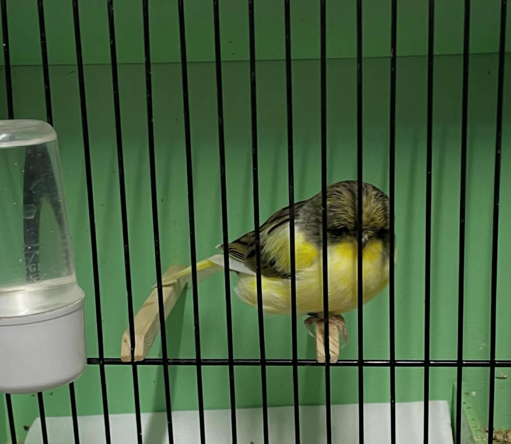

Φωτογραφίες



Εκτροφή Καναρινιών Gloster
Το GLOSTER VIRTUS αποτελεί μια ποιοτική εκτροφή καναρινιών Gloster, με έμφαση στη σωστή επιλογή γεννητόρων, την υγεία και τον σεβασμό στο πτηνό.
Το Gloster είναι μία από τις παλιές ράτσες καναρινιών και δημιουργήθηκε λίγο μετά τον 1ο παγκόσμιο πόλεμο από μία γυναίκα εκτροφέα. Η κυρία Rogerson από το Gloucestershire ήταν η δημιουργός αυτής της ράτσας καναρινιών. Η κυρία Rogerson αγαπούσε πραγματικά τα μικροκαμωμένα πράγματα. Είχε μπονσάι και θάμνους και όταν ασχολήθηκε με καναρίνια γνώρισε τα Crested και τα αγάπησε εξίσου, εκτός από το μεγάλο τους μέγεθος. Έτσι ξεκίνησε τις προσπάθειες να δημιουργήσει μια ράτσα καναρινιών με τα χαρακτηριστικά των Crested αλλά πολύ μικρότερα σε μέγεθος. Για να το πετύχει αυτό η εκτροφέας χρησιμοποίησε τα Roller καναρίνια και κάποια πολύ μικρά Border. Αξίζει να σημειωθεί ότι τα Border του 1920 ήταν πολύ μικρότερα σε μέγεθος από τα σημερινά.Παράλληλα και ανεξάρτητα από την κυρία Rogerson, ένας άλλος εκτροφέας επιχειρούσε ένα μικρόσωμο Crested καναρίνι. Ο John Mclay από τη Σκωτία, ο οποίος ήταν αναγνωρισμένος εκτροφέας και κριτής Crested καναρινιών χρησιμοποιούσε τα μικρότερα Crested από το κοπάδι του και κάποια πολύ μικρόσωμα Border για να πετύχει τα χαρακτηριστικά του νέου είδους. Έτσι δύο διαφορετικοί εκτροφείς είχαν τον ίδιο στόχο και επιχειρούσαν το ίδιο πράγμα με ελαφρώς διαφορετικούς τρόπους. Το Gloster τελικά είναι ένας συνδυασμός των αποτελεσμάτων αυτών.Καταλυτικός παράγοντας για να δημιουργηθεί τελικά η ράτσα από τους δύο αυτούς εκτροφείς ήταν ο A.W. Smith, ο οποίος βοήθησε και τους δύο στις προσπάθειές τους και τους ώθησε να ανταλλάξουν πουλιά κάποιες φορές. Το αποτέλεσμα ήταν η κυρία Rogerson (μετά από επιμονή του A.W.Smith) να εμφανίσει δύο πουλιά στο London National Show το 1925. Αυτό σήμανε και την αναγνώριση της νέας ράτσας. Από την ονομασία του τόπου καταγωγής τους τα πουλιά ονομάστηκαν Glosters. Αυτά που έφεραν λοφίο ονομάστηκαν Corona και τα χωρίς λοφίο Consorts (σύντροφοι).Η ράτσα έτυχε μεγάλης αναγνώρισης έως τον 2ο παγκόσμιο πόλεμο. Με τον πόλεμο όλη η ορνιθοκουλτούρα πήγε πίσω και τα Glosters κόντεψαν να εξαφανιστούν και να ξεχαστούν. Για τη σωτηρία τους ευθύνεται ο Fred Bryant και η σύζυγός του Vera. Το 1946 οι εκτροφείς αυτοί ξαναπαρουσίασαν το Gloster και το γλύτωσαν από την εξαφάνιση. Χάρη στην επιμονή τους τέθηκαν τα πρώτα κριτήρια της ράτσας και συνέχισε με επιτυχία μέχρι τις μέρες μας.
Βρείτε μας στα social media: